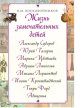

Жизнь замечательных детей (Суворов и др.)

Уникальное собрание биографий самых знаменитых людей планеты. Валерий Воскобойников рассказывает о детстве замечательных людей так, чтобы читать о них было интересно, весело и небесполезно. Для детей младшего и среднего школьного возраста.